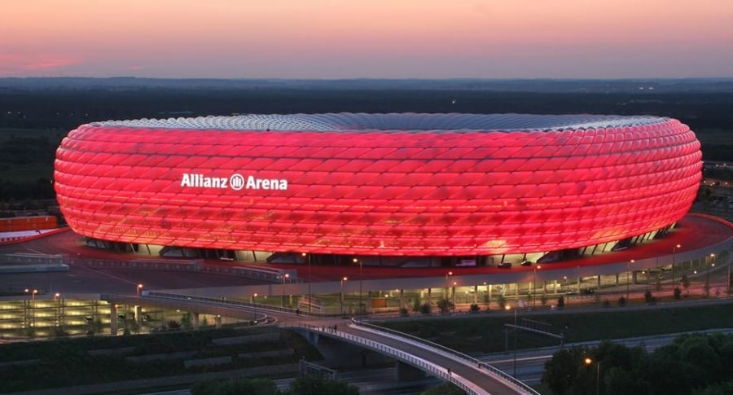
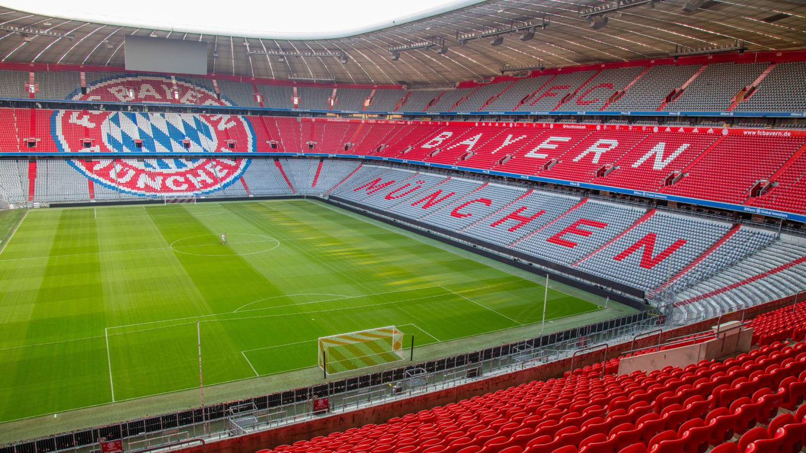

El Allianz Arena es un estadio de fútbol ubicado en el barrio de Fröttmaning, al norte de Múnich, en el estado federado de Baviera, Alemania. Alberga los partidos como local del F. C. Bayern de Múnich de la Bundesliga de Alemania, equipo que previamente disputaba sus partidos de local en el Estadio Olímpico de Múnich. El TSV 1860 Múnich jugó de local en el estadio desde su inauguración en 2005 hasta 2017. Fue una de las subsedes de la Copa Mundial de Fútbol de 2006 celebrada en Alemania. Para este evento, el estadio llevó temporalmente el nombre de Estadio de la Copa Mundial de la FIFA de Múnich, por razones estipuladas en el reglamento de la FIFA. Por razones similares, también lleva el nombre de München Fußball Arena en los campeonatos organizados por la UEFA, como la Liga de Campeones. Pese a estos cambios, el nombre oficial es Allianz Arena. El Allianz Arena es conocido popularmente con el sobrenombre de Schlauchboot (en español: bote inflable) por su forma.
El 21 de octubre de 2001 se realizó un referendo municipal en Baviera, en el que el 65,8% de los votantes (de un 37,5% de los muniqueses con derecho a voto que emitió sufragio) optó por la construcción de un nuevo estadio (en desmedro de la remodelación del Estadio Olímpico de Múnich). El edificio fue diseñado por la firma Herzog & de Meuron, de Basilea (Suiza), la cual fue seleccionada en febrero de 2003. La compañía de seguros alemana Allianz, que es el principal socio de la sociedad que construye el proyecto, pagó para que el estadio llevara su nombre durante los próximos 30 años. El costo total de la construcción fue de 341 millones de euros, pagados por el TSV 1860 Múnich y el FC Bayern de Múnich. La construcción comenzó el 21 de octubre de 2002, con la colocación de la primera piedra por parte de Franz Beckenbauer, y fue terminada en abril de 2005. Fue inaugurado el 30 de mayo de 2005 en un partido entre el TSV 1860 Múnich y el FC Núremberg. El 31 de mayo de 2005 se disputó el segundo partido inaugural, entre el FC Bayern Múnich y la selección alemana de fútbol. El 2 de junio de 2005 se disputó el primer partido entre los dos equipos locales, que ganó el TSV 1860 Múnich gracias a un gol de Paul Agostino. El primer gol marcado en el estadio fue obra de Patrick Milchraum, del TSV Múnich. El primer gol oficial del estadio fue marcado por Owen Hargreaves el 5 de agosto de 2005, en la victoria del Bayern de Múnich 3-0 sobre el Borussia Mönchengladbach, partido de Bundesliga. Durante la Copa Mundial de la FIFA 2006 pasó a llamarse Estadio de la Copa Mundial de la FIFA de Múnich (alemán: FIFA WM-Stadion München), ya que la FIFA no permite ningún tipo de publicidad en el nombre de los estadios. Esta restricción también es impuesta por la UEFA, que obligó al Bayern a cambiar el nombre del estadio para los partidos de UEFA Champions League. En esta competición, el estadio se denominó München Arena. El 9 de junio de 2006 se disputó el partido inaugural de la Copa Mundial de la FIFA 2006 (aunque una ceremonia inaugural de carácter cultural se celebró un día antes en Berlín), entre la selección alemana de fútbol y la selección costarricense, con victoria 4-2 de los locales. El 19 de mayo de 2012, se disputó la Final de la Liga de Campeones de la UEFA 2011-12 en este estadio, que enfrentó precisamente al Bayern de Múnich contra el Chelsea Football Club. Los ingleses ganaron en la tanda de penaltis. Debido a sus problemas financieros el TSV 1860 decidió vender su participación en la sociedad al FC Bayern, por lo que el FC Bayern es el único propietario del Allianz Arena. En mayo de 2025 se jugará la final de la Liga de Campeones de la UEFA 2024–25 , la 70ª edición de la competición.
El Estadio de la Copa Mundial de la FIFA de Múnich logró ser una de las subsedes de la Copa Mundial de Fútbol de 2006. En este recinto se disputaron 4 de los 48 partidos de la primera fase. En el partido inaugural del torneo, disputado el 9 de junio y correspondiente al grupo A, se enfrentó la selección alemana contra la selección costarricense. El resultado fue un triunfo de 4:2 a favor de Alemania, con goles de Philipp Lahm, Miroslav Klose (en dos ocasiones) y Torsten Frings. Los goles costarricenses fueron anotados por Paulo Wanchope. Este partido ha sido el partido inicial del torneo con mayor número de goles anotados desde 1934. El 14 de junio se jugó el décimo sexto partido de la primera ronda (16), correspondiente al grupo H. Se disputó el "clásico musulmán" entre las selecciones de Arabia Saudita y Túnez, en un partido que terminó empatado 2:2. Los goles de Túnez fueron anotados por Ziad Jaziri y Radhi Jaidi. Por su parte, los goles de Arabia Saudita fueron marcados por Yasser Al-Qahtani y Sami Al Jaber. En el vigésimo séptimo partido de la primera ronda (27), disputado el 18 de junio y correspondiente al grupo F, la selección brasileña derrotó por 2:0 a la selección australiana, con goles de Adriano y el suplente Fred. El 21 de junio se disputó el trigésimo octavo partido de la primera ronda (38), válido por el grupo C, donde se enfrentaron las selecciones de Costa de Marfil y de Serbia y Montenegro, con un triunfo de 3:2 a favor de los marfileños. Los goles de la selección marfileña fueron anotados por Aruna Dindane (en dos ocasiones) y Bonaventure Kalou. Por su parte, los goles de la selección de Serbia y Montenegro fueron anotados por Nikola Žigić y Saša Ilić. Además, en este recinto deportivo se disputaron 2 de los 16 partidos de la segunda fase. Se disputó el primer partido de los octavos de final (49) el 24 de junio, donde se enfrentaron las selecciones de Alemania y de Suecia, con un triunfo de 2:0 a favor de los alemanes. Los goles de la selección alemana fueron anotados por Lukas Podolski. El 5 de julio se disputó el segundo partido de la semifinal (62), donde se enfrentaron las selecciones de Portugal y de Francia. La selección francesa finalmente venció por 1:0, gracias a un gol de penalti, marcado por Zinedine Zidane.